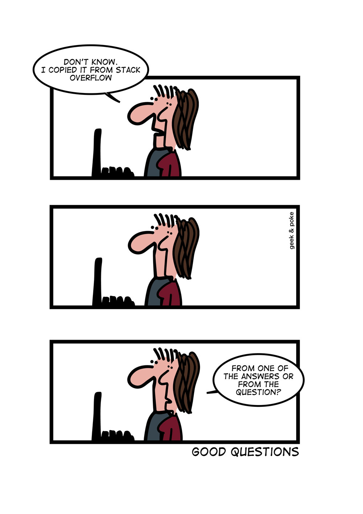

I’m sure we’ve all encountered a problem at some point in our lives that we could not solve on our own. After struggling for hours and trying to find a solution through brute force, it’s natural to turn to Google for help and hope that someone has already encountered a similar situation. However, what happens when none of the results are applicable to our situation or our situation is entirely unique and no one has asked yet? At this point, the best course of action is to simply ask for help, as our teachers often said, “there is no such thing as a stupid question.” Unfortunately, they never told us that there were “stupid” ways and “smart” ways of asking questions.
Often, when asking questions on popular forums like StackOverflow, it isn’t uncommon to find yourself on the receiving end of some harsh comments. You may come to the conclusion that all users are simply rude and condescending; however, the more likely cause may simply be in the way in which your question was asked. It’s important to understand these public forums are largely volunteer work and thus in order to receive sincere feedback, you have to demonstrate that you actually put in effort to understand the problem and have a clear idea of what you want by asking “smart” questions.
In their essay, How To Ask Questions The Smart Way, Eric S. Raymond and Rick Moen outline several characteristics that make a question “smart” vs “stupid.”
In the following example, the author is asking for an alternate method in python to iterate over multiple lists simultaneously.
Q: How do I iterate through two lists in parallel?
I have two iterables, and I want to go over them in pairs:
__________________________________________
foo = [1, 2, 3]
bar = [4, 5, 6]
for (f, b) in iterate_together(foo, bar):
print("f:", f, " | b:", b)
__________________________________________
That should result in:
__________________________________________
f: 1 | b: 4
f: 2 | b: 5
f: 3 | b: 6
__________________________________________
One way to do it is to iterate over the indices:
__________________________________________
for i in range(len(foo)):
print("f:", foo[i], " | b:", bar[i])
__________________________________________
But that seems somewhat unpythonic to me. Is there a better way to do it?
Link to Thread: StackOverflow
In the post we can see that the author is clearly describing the goal the of their question, which is to find a method to iterate over multiple lists simultaneously. However, what sets their question apart many others is that they explicitly mention and provide a demonstration of an implementation that already works and are specifically asking for a more efficient or “pythonic” method using Python’s built-in functions. With 1202 up votes, it’s clear that many users found the question well-researched and appreciated the effort put in. As a result, the author was provided with an alternate solution using the zip() function.
Now that we’ve seen what a “Smart” question looks like, lets see one that completely disregards rules and exhibits signs of being a “Stupid” question. In the following example, the author is asking for a solution to what appears to be a homework problem.
Q: Calculate the amount of money that each person has
There is a two-dimensional array in which numbers are stored. Each line is an investment/withdrawal of sums of money to the bank by one person (if I eat, then the
number is negative), each contribution /withdrawal is stored in a separate cell.
// Calculate the amount of money that each person has and display a list of amounts by sorting it from a larger amount to a smaller one.
// Set the values to demonstrate the calculations yourself.
Link to Thread: StackOverflow
In this post, the author clearly demonstrates a lack research, effort, or attempt to solve the solution on their own. Rather than posting their own code and asking for help on why their code wasn’t producing the correct output, the user had typed the entire question clearly expecting someone to provide a complete answer. Furthermore, when looking at the comments, we also see that other users were able to identify this as a homework question as one person wrote “this looks like a homework exercise and displays no effort.”
Asking questions online can be intimidating for some individuals, as no one wants to be berated or criticized for not knowing something. However, it is important to recognize that asking questions is essential part learning and growth in any field, especially software engineering. As our field continues to grow and evolve we will inevitably encounter situations in which we are unable to resolve a problem on our own. At such times, it’s crucial to be able to ask questions and find answers in an effective manner to overcome these obstacles. Asking “smart” questions not only helps mitigate any harsh backlash from online forums but also increase you chances of receiving useful feedback in a more timely manner.